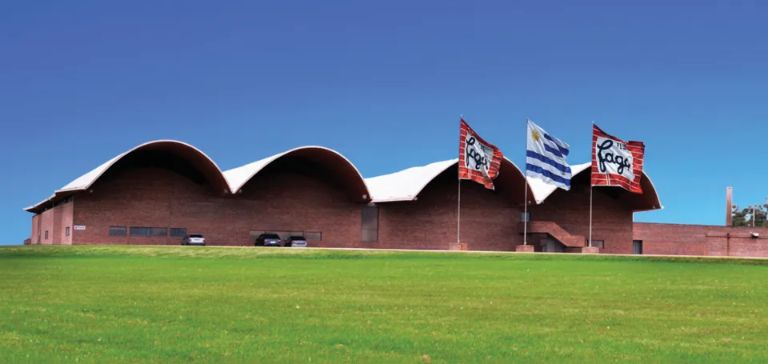
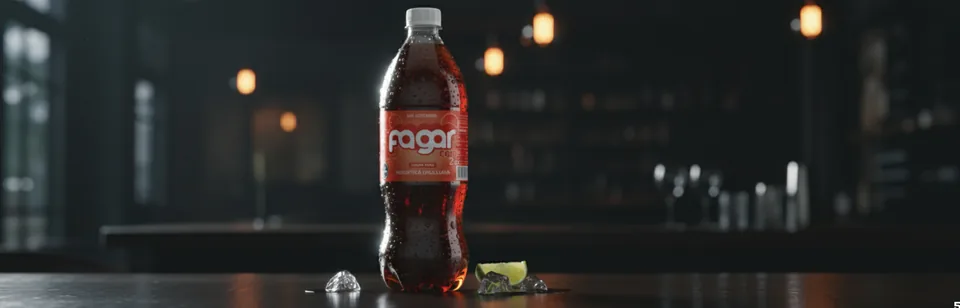
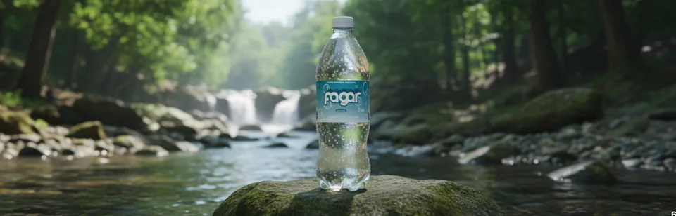
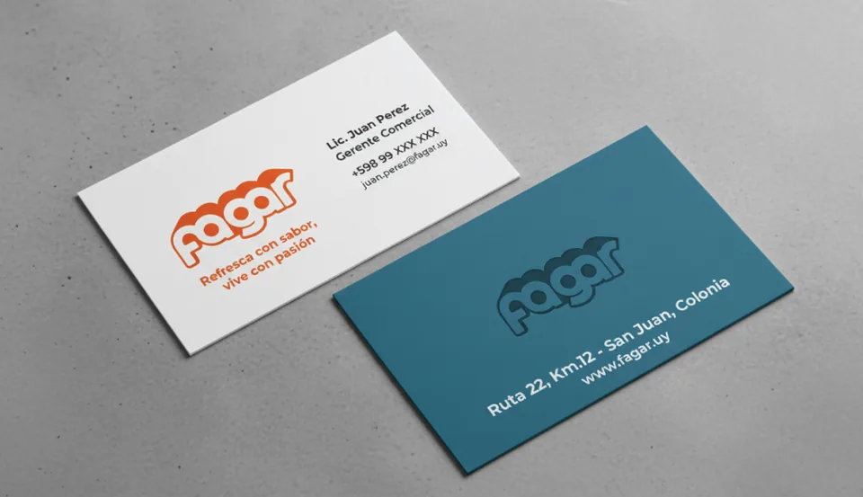
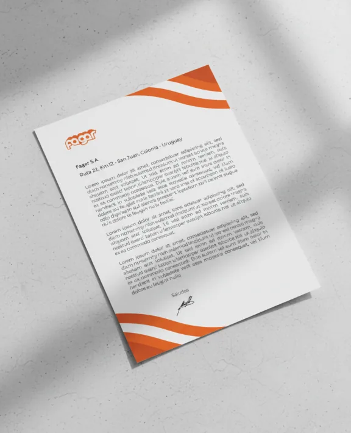

05 / 07
Fagar
A redesign for a soft drinks brand from Colonia, founded in 1947.
- Year
- 2025
- Context
- 4th semester final project, UDE. Unofficial redesign
- Role
- Research, identity and applications

Fagar was born in 1947 in Colonia, from the partnership of Ricardo Facio and Pedro García, in a factory built by Eladio Dieste that is now a National Historic Monument. It leads the southern coast market, but its graphics looked stuck next to brands that keep renewing packaging and logos. The redesign brings it closer to what it claims to be: young, cheerful and close.
“Refresh with flavour, live with passion.”
Logotype
A rounded, heavy logotype. The curve isn't arbitrary: it comes from Dieste's vaults at the plant, the most direct link between the brand and its place.





